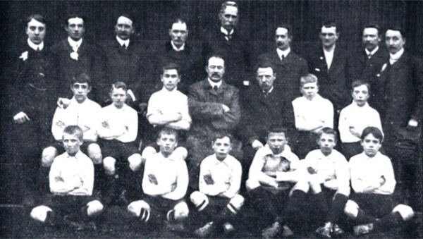

Los antecedentes del fútbol son muy lejanos, la propia FIFA encuentra evidencias de un deporte muy parecido en la antigua China, en los siglos II y III a. C. En la Antigua Roma, un juego llamado harpastum, con una pelota más pequeña, y se inspiraba en un juego griego, la phaininda, más parecido al rugby. En la Edad Media se jugaron diversas variantes del fútbol, pero los ingleses fueron los primeros, a finales del siglo XVII, en poner normas y reglas. Vamos a verlo con más detalle:

Protofútbol
Existieron juegos de diversa índole a los que cabe considerar como precedentes del fútbol, aunque no existan datos absolutamente sólidos al respecto. En China, en tiempos remotos, el emperador Huang-Ti utilizaba un juego con balón como adiestramiento militar. Y en Japón había una variedad protofutbolística con características similares a las de China, aunque no tenía un objetivo militar sino que se realizaba por simple diversión. En Grecia, en el siglo III a.C., existía un juego llamado “episkyros”, y en Roma, las legiones jugaban al “harpastum”. En Normandía y Bretaña, regiones del actual Estado francés, desde tiempo inmemorial existía la popular costumbre de jugar al “soule” o “choule”.
Fútbol «moderno»
En el siglo XVIII, cuando en la mayoría de las escuelas inglesas tenían su propio juego con distintos reglamentos, lo que impedía enfrentarse entre ellas, se jugaba una especie de balompié que se llamó “socker” y después “soccer”. En 1823, en el colegio de Rugby, un estudiante llamado William Ellis, cogiendo el balón con las manos, lo conducía hasta depositarlo detrás de la línea de gol contraria, con lo que creó el rugby en pleno partido de fútbol. Aquí es cuando se separan el fútbol asociación y el rugby. El primer código para regular la práctica del fútbol surgió en la Universidad de Cambridge, de donde salieron las “Catorce reglas de Cambridge”, que más tarde serían las “Leyes del juego” (1848). El 26 de octubre de 1863, en la Free Masons Tavern, de Londres, se funda la Football Association. La FIFA (Federación Internacional de Fútbol Asociación) fue creada en 1904, tras haberse disputado ya desde 1872 los primeros partidos internacionales de fútbol.
Quién inventó el fútbol
Si quieres saber quién es el creador del fútbol, en qué año y dónde, debes saber que el día del nacimiento oficial del fútbol es el 26 de octubre de 1863 después de una reunión de asociaciones deportivas en la taberna Freemason’s, en Great Queen reet de Londres.

En aquella famosa reunión había partidarios de todas las escuelas deportivas de Inglaterra. Los que venían de la ciudad de Rugby apostaban por el uso de las manos, y los que venían de Harrow querían permitir únicamente el uso de los pies y la cabeza. Finalmente, se separaron el fútbol y el rugby, así nació el futbol y se creó la English Football Association y se escribieron las primeras reglas del fútbol.